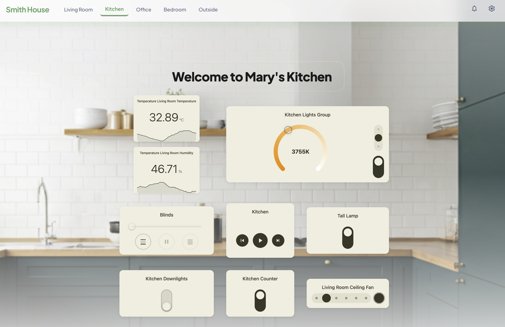

HArvest
Securely share and control your Home Assistant smart home devices on any HTML or WordPress page.

How it works
HArvest is a Home Assistant custom integration for adding live device cards to webpages. Open the HArvest panel, choose the entities you want to share, and generate a ready-to-paste embed snippet.
The wizard handles permissions, website restrictions, expiry, and appearance. Paste the generated snippet into your page, and the cards begin receiving live state updates.
Widgets connect from the visitor's browser directly to your HA instance over WebSocket. State changes push in real time. There is no intermediary service.
Key concepts
Widget tokens
Every widget has a token - a short random ID (prefixed hwt_) that identifies both the widget and its access rules. The token determines which entities are accessible, whether visitors can control them, and which websites are allowed to connect. Tokens can be revoked instantly from the panel.
Configuration hierarchy
Connection settings have three levels. A card inherits its Home Assistant URL, token, and optional HMAC secret from the nearest configured level:
Page level: HArvest.config({ haUrl: "...", token: "..." })
|
v
Group level: <hrv-group> -- optional, groups related cards
|
v
Card level: <hrv-card entity="...">Most pages call HArvest.config() once with the HA URL and token, then place <hrv-card> elements where needed. Groups are useful when a section needs its own token. Display settings and access rules remain managed by the token in the HArvest panel.
Entity tiers
HArvest divides entity types into three tiers:
- Tier 1 - 22 domains covered by purpose-built card renderers (lights, fans, climate, sensors, locks, scripts, automations, and more)
- Tier 2 - any other domain gets a generic card with icon, name, and current state
- Tier 3 - blocked domains (alarm panels, cameras, etc.) that cannot be added to any token
See Entity types for the full breakdown.
Companion entities
A companion is a secondary entity displayed inside a primary card. For example, a binary motion sensor rendered as a pill inside a light card. Interactive companion domains have a read-only toggle, while display-only companion domains always show state without allowing interaction. Companions are configured per-entity in the panel and don't need their own card element on the page.